Workshop · 28 October 2026
Nüwa Mends the Sky
| 2000 | 23.0% | 35.0% | 23.8% |
|---|---|---|---|
| 2005 | 28.1% | 36.0% | 18.2% |
| 2010 | 32.3% | 35.6% | 14.3% |
| 2015 | 36.9% | 34.9% | 12.2% |
| 2020 | 48.3% | 29.9% | 8.7% |
| 2025 | 58.1% | 26.6% | 4.9% |
- A
- C
- R
A
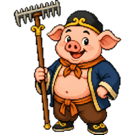
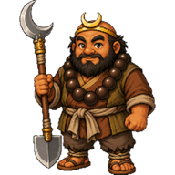
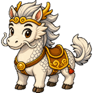
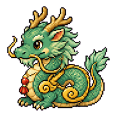
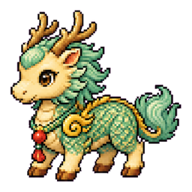
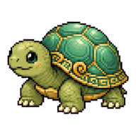
C
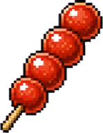
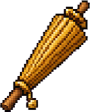
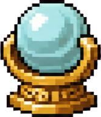
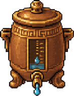
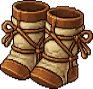
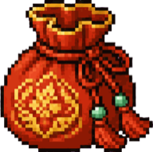
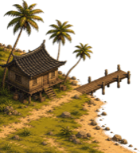
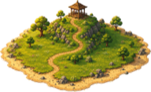
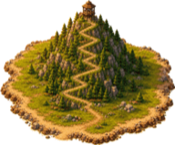
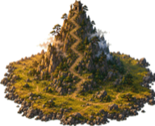
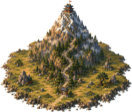
R
I want to build a powerful secondary school revision tool on SLS
(student learning space) for students to revise all CL vocab covered
over 4 years, and for it to be trackable to let them see their progress,
so that they can revisit the vocab that they have yet to master.
I don't know how to start, could you help me?
https://www.learning.moe.edu.sg/teacher-user-guide/author/html5-content-development/
- 01
- 02
- 03
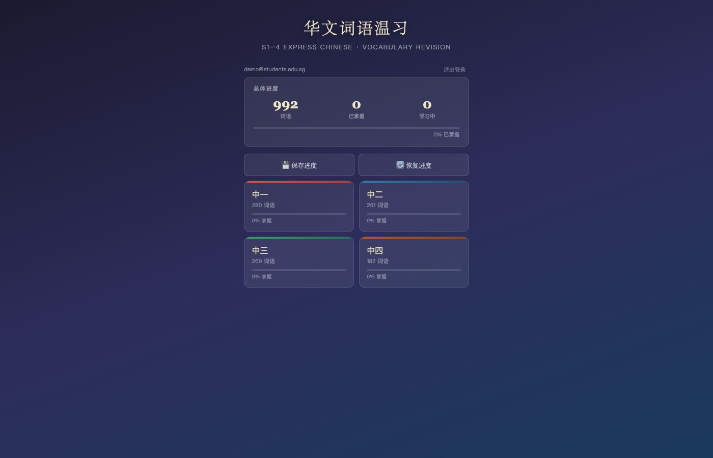
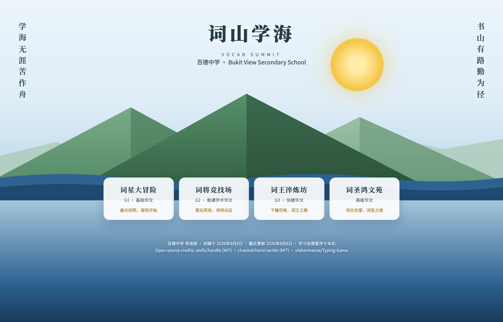
- Claude
- ChatGPT
- GitHub
- Firebase
Open the starter claude.ai Step-by-step guide
-
- github.com/signup
-
github.com/kaixinbuilds/VocabClimbStarter
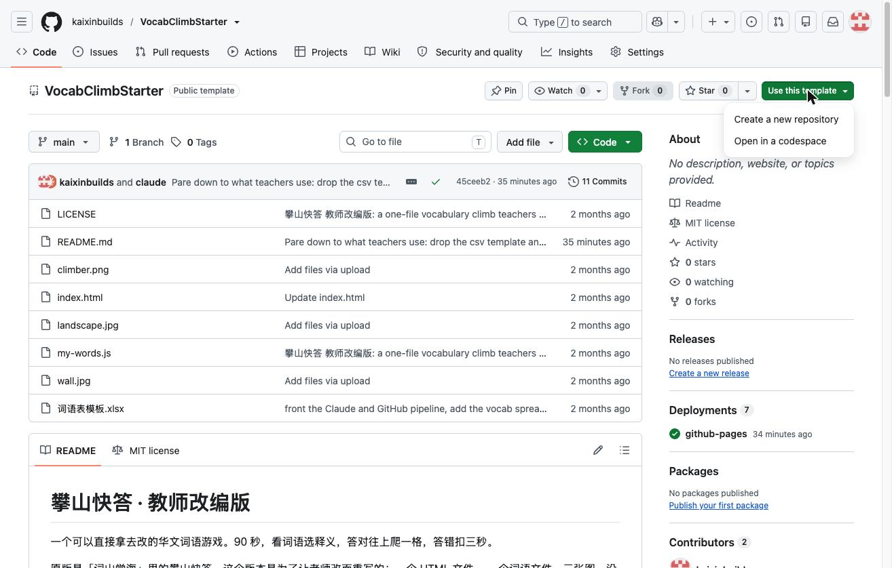
-
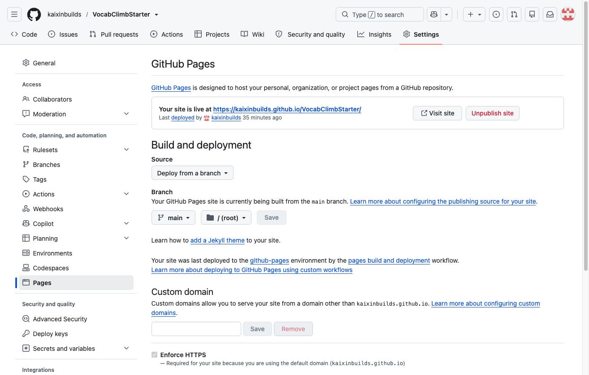
-
我是中学华文老师。 我已经把一个小游戏的整个资料夹和一份词语表格上传到这个 Project 里。 请帮我做三件事： 1. 读我上传的表格，把里面的词语和释义，照 my-words.js 原本的格式 重新写成一个完整的 my-words.js 给我下载。格式不要动，只换内容。 2. 把 UNIT_NAME 改成：〔你的单元名称〕 3. 把 SECONDS 改成：〔90〕 改好之后直接给我可以下载的 my-words.js，并告诉我放回哪个位置。 如果我的表格有问题（缺了释义、词语重复、少于 8 个），请先告诉我，不要自己猜。
-
我已经把这个游戏的整个资料夹上传到这个 Project 里了。 告诉我那三张图（landscape.jpg、wall.jpg、climber.png） 分别是做什么用的、该做多大，我想自己换掉。
-
-
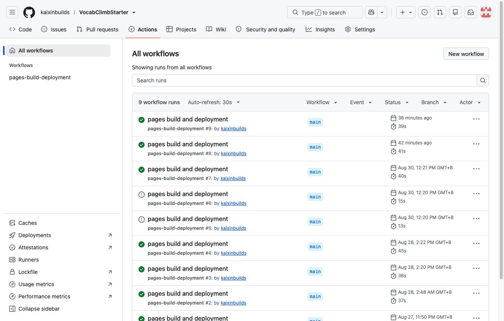
-
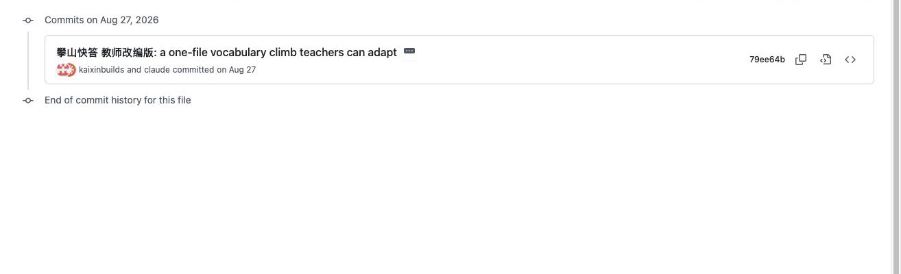
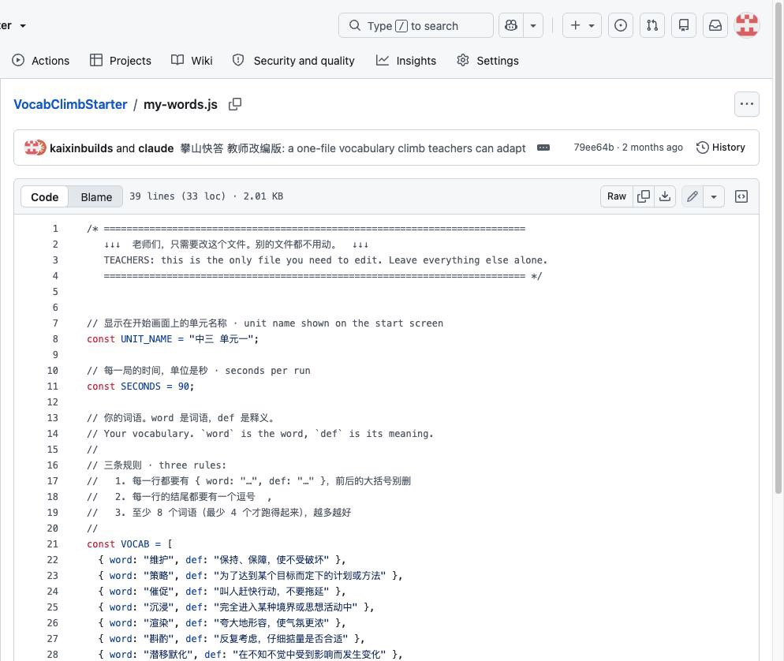